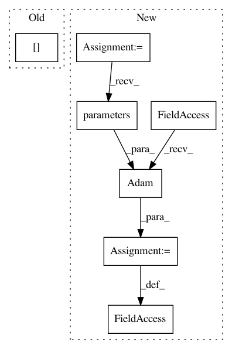

0bb6982bd06bf21de58e61f021626ade1c9b6101,ch14/04_train_ddpg.py,,,#,46
Before Change
// train critic
optimizer.zero_grad()
q_v = net.critic(states_v, actions_v)
q_last_v = tgt_net.target_model(last_states_v)[1]
q_last_v[dones_mask] = 0.0
q_ref_v = rewards_v.unsqueeze(dim=-1) + q_last_v * GAMMA
critic_loss_v = F.mse_loss(q_v, q_ref_v.detach())
critic_loss_v.backward()
After Change
test_env = gym.make(ENV_ID)
act_net = model.DDPGActor(env.observation_space.shape[0], env.action_space.shape[0])
crt_net = model.DDPGCritic(env.observation_space.shape[0], env.action_space.shape[0])
if args.cuda:
act_net.cuda()
crt_net.cuda()
print(act_net)
print(crt_net)
tgt_act_net = ptan.agent.TargetNet(act_net)
tgt_crt_net = ptan.agent.TargetNet(crt_net)
writer = SummaryWriter(comment="-ddpg_" + args.name)
agent = model.AgentDDPG(act_net, cuda=args.cuda)
exp_source = ptan.experience.ExperienceSourceFirstLast(env, agent, gamma=GAMMA, steps_count=1)
buffer = ptan.experience.ExperienceReplayBuffer(exp_source, buffer_size=REPLAY_SIZE)
act_opt = optim.Adam(act_net.parameters(), lr=LEARNING_RATE)
crt_opt = optim.Adam(crt_net.parameters(), lr=LEARNING_RATE)
frame_idx = 0
best_reward = None
with ptan.common.utils.RewardTracker(writer) as tracker:
In pattern: SUPERPATTERN
Frequency: 3
Non-data size: 7
Instances
Project Name: PacktPublishing/Deep-Reinforcement-Learning-Hands-On
Commit Name: 0bb6982bd06bf21de58e61f021626ade1c9b6101
Time: 2018-02-04
Author: max.lapan@gmail.com
File Name: ch14/04_train_ddpg.py
Class Name:
Method Name:
Project Name: IBM/adversarial-robustness-toolbox
Commit Name: fa961f2290c3144f1c5a5c9b8a484610ab835032
Time: 2019-05-14
Author: Maria-Irina.Nicolae@ibm.com
File Name: tests/defences/test_pixel_defend.py
Class Name: TestPixelDefend
Method Name: test_one_channel
Project Name: rusty1s/pytorch_geometric
Commit Name: e2db3b3f1d3d23cd5bc1e295835e0f4b33e95447
Time: 2018-03-07
Author: matthias.fey@tu-dortmund.de
File Name: examples/cora_gcn.py
Class Name:
Method Name: